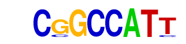

| p-value: | 1e-157 |
| log p-value: | -3.635e+02 |
| Information Content per bp: | 1.711 |
| Number of Target Sequences with motif | 530.0 |
| Percentage of Target Sequences with motif | 3.48% |
| Number of Background Sequences with motif | 274.3 |
| Percentage of Background Sequences with motif | 0.83% |
| Average Position of motif in Targets | 43.9 +/- 25.3bp |
| Average Position of motif in Background | 51.9 +/- 29.6bp |
| Strand Bias (log2 ratio + to - strand density) | 10.0 |
| Multiplicity (# of sites on avg that occur together) | 1.01 |
| Motif File: | file (matrix) reverse opposite |
| Rank | Match Score | Redundant Motif | P-value | log P-value | % of Targets | % of Background | Motif file |
| 1 | 0.932 | 1e-137 | -316.454984 | 4.64% | 1.55% | motif file (matrix) | |
| 2 | 0.881 | 1e-132 | -305.588127 | 2.48% | 0.51% | motif file (matrix) | |
| 3 | 0.863 | 1e-113 | -261.376454 | 1.95% | 0.37% | motif file (matrix) | |
| 4 | 0.689 | 1e-93 | -215.984185 | 0.37% | 0.01% | motif file (matrix) | |
| 5 | 0.810 | 1e-66 | -152.410531 | 7.10% | 4.07% | motif file (matrix) | |
| 6 | 0.758 | 1e-33 | -77.790253 | 0.44% | 0.06% | motif file (matrix) | |
| 7 | 0.655 |  | 1e-31 | -71.616265 | 1.40% | 0.56% | motif file (matrix) |
| 8 | 0.620 | 1e-28 | -65.119783 | 1.04% | 0.37% | motif file (matrix) |